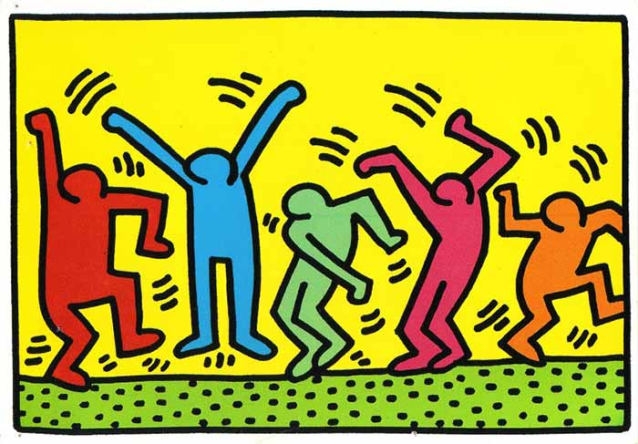
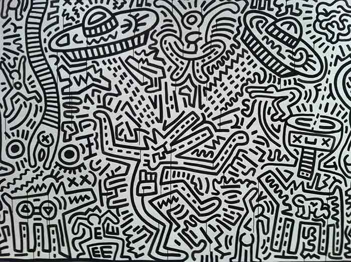

KEITH HARING
Urban Art
L'art urbain, ou « street art1 », est un mouvement artistique contemporain. Il regroupe toutes les formes d’art réalisé dans la rue, ou dans des endroits publics, et englobe diverses techniques telles que le graffiti, le pochoir, la mosaïque, les stickers voire le yarn bombing ou les installations. C'est principalement un art éphémère vu par un très grand public. La généalogie de l'art urbain est multiple et complexe. Il existe depuis les années 1960 une prise en compte de l'environnement urbain dans la création contemporaine. Allan Kapprow, un des premiers artistes à utiliser les installations, écrit que : « l'art s'est déplacé de l'objet spécialisé en galerie vers l'environnement urbain réel3. » En France, les années 1960 voient également des expérimentations d'intégration de l'art dans la ville. L'une des premières expériences est l'organisation d'un symposium international de sculpture, en 1968 à Grenoble, qui impulse la création de dizaines d'œuvres dans la ville, dont celles de Mizui, Vasarely,
Calder... En 1972, à Villeneuve de Grenoble, des plasticiens sont contactés pour participer à la conception du volume de la galerie de l'Arlequin. Des contacts sont pris avec Jean Dewasne mais la tentative tourne court. La décoration est finalement confiée à Henri Ciriani et Borja Huidobro. Une fresque est réalisée sur la nouvelle bourse du travail par Ernest Pignon-Ernest, considéré comme l'un des précurseurs de l'art urbain. D'autres expériences sont imaginées dans les villes nouvelles, comme à Évry, en 1972, et à Marne-la-Vallée. L'art urbain puise ses origines dans des disciplines graphiques aussi variées que la bande dessinée ou l'affiche. Selon Alain Weill4, spécialiste mondial de l'affiche (à ne pas confondre avec l'homme d'affaires du secteur des médias...), l'essence de l'art urbain contemporain se retrouve tant dans les œuvres des affichistes d'après-guerre comme Raymond Savignac, en France, que dans celles des dessinateurs de la contre-culture américaine tels Robert Crumb ou Vaughn Bodé, tous deux figures de proue du comics underground depuis les années 1960.

Keith Haring, né le 4 mai 1958 à Reading en Pennsylvanie et mort le 16 février 1990 (à 31 ans) à New York, est un artiste, dessinateur, peintre, sculpteur et activiste américain des années 1980. À New York, et plus particulièrement dans l'East Village, il découvre la foisonnante culture alternative des années 1980 qui, hors des galeries et des musées, développe son expression sur de nouveaux territoires : rues, métros, entrepôts, etc. Il rencontre des artistes de la vie underground new-yorkaise tels Kenny Scharf et Jean-Michel Basquiat, avec qui il devient ami, et organise ou participe à des expositions et des performances au Club 57, qui devient le lieu fétiche de l'élite avant-gardiste. C'est à cet endroit que le Bébé rayonnant, un des pictogrammes les plus connus de l'artiste, fut créé. Inspiré par le graffiti, tenant du Bad Painting, et soucieux de toucher un large public, Haring commence à dessiner à la craie blanche sur des panneaux publicitaires noirs du métro de New York.

Il grave également des dalles de grès des trottoirs dans l'East Village (elles sont toujours visibles). Un photographe, Tseng Kwong Chi, le photographie en permanence, même quand la police l'arrête. Il exécute ainsi plusieurs milliers de dessins, aux lignes énergiques et rythmées. Ses peintures font partie du mouvement général de l'art contemporain, et pas seulement de la stricte figuration libre. La « griffe Haring », c'est la répétition infinie de formes synthétiques soulignées de noir avec des couleurs vives, éclairantes, sur différents supports. C'est un récit permanent où l'on retrouve des bébés à quatre pattes, des dauphins, des postes de télévision, des chiens qui jappent, des serpents, des anges, des danseurs, des silhouettes androgynes, des soucoupes volantes, des pyramides ou des réveils en marche, mais aussi la sexualité et la pulsion de mort.